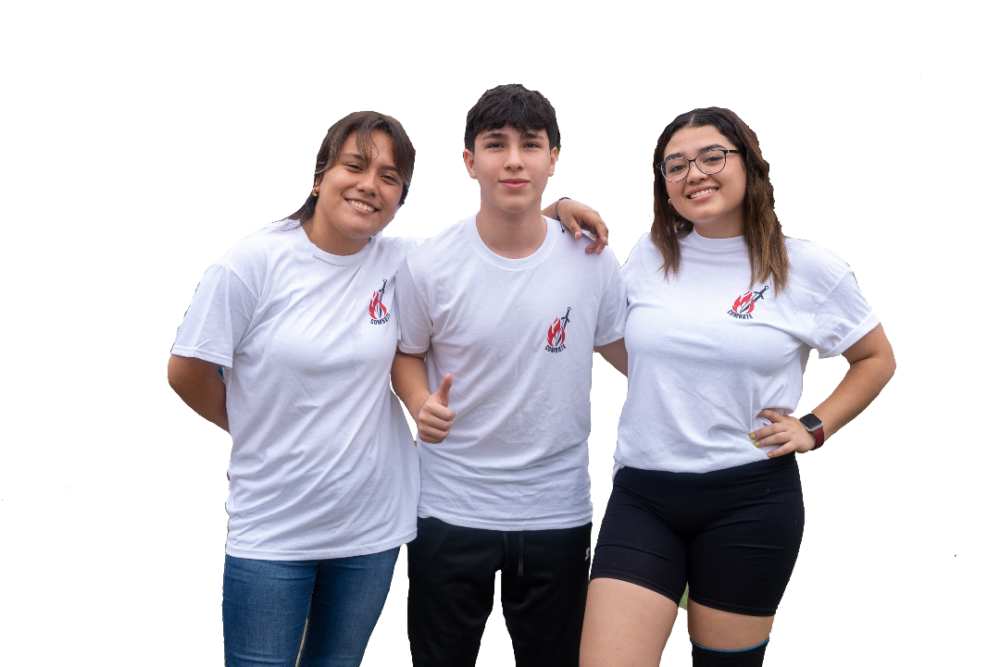
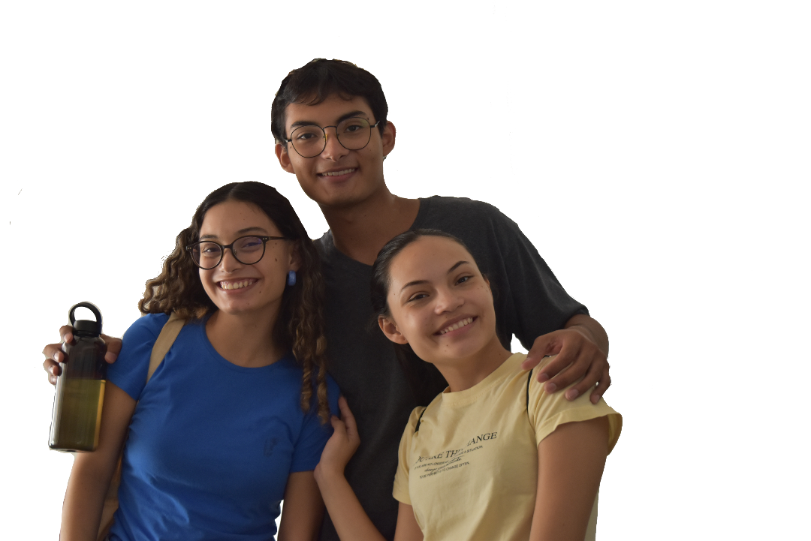
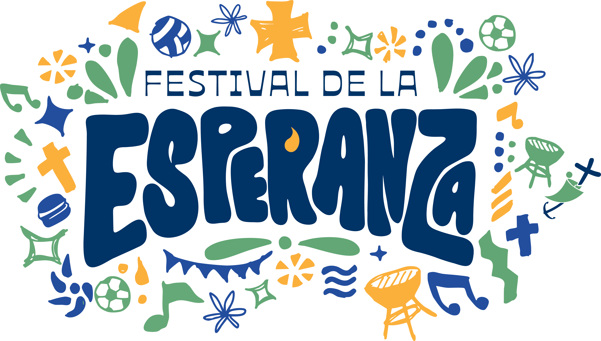
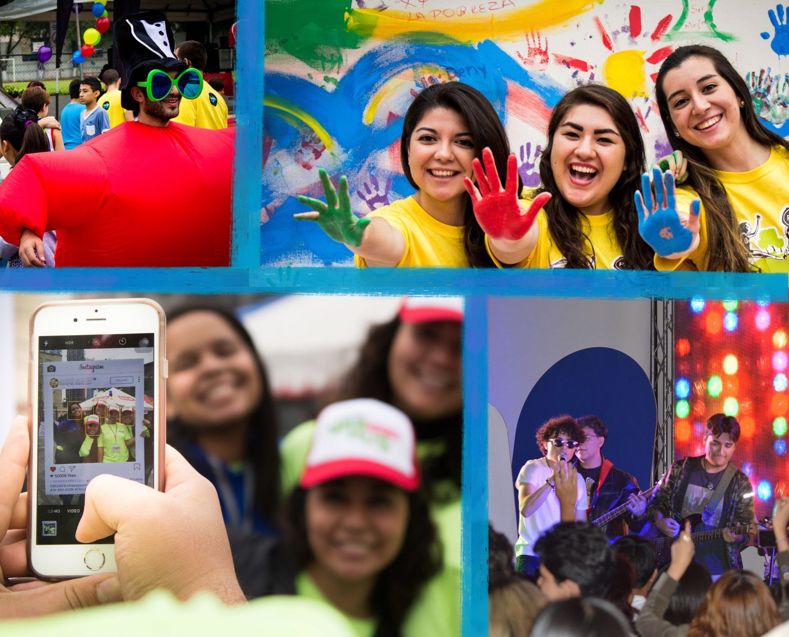

SJ cuenta con un Programa Preventivo de Formación en Valores donde atendemos a jóvenes de entre 13 y 25 años. Procedentes de toda la zona metropolitana de Monterrey.
El objetivo del proyecto es acompañar al joven en sus etapas de crecimiento de manera integral. Ser un apoyo en su formación humana, desarrollo interpersonal y en el desarrollo de un criterio ético y moral.

El programa se divide en secundaria mujeres, secundaria hombres y preparatoria mixto

Participan jóvenes de 18 a 25 años de edad del área metropolitana de Monterrey. Actualmente contamos con 3 sedes: zona TEC, zona UNI, y zona poniente.
Este proyecto permite al joven de 18 a 25 años de edad, tener una experiencia de servicio por un periodo de 6 semanas durante el verano. Es un tiempo de formación y crecimiento personal, entrenamiento y capacitación para el servicio a la juventud, viajando a diversos estados del país y fuera del mismo.
En nuestras residencias universitarias, nuestros jóvenes encuentran espacios con alimentación y hospedaje a costo accesible, aunado a un buen ambiente de formación humana, estudio, disciplina, responsabilidad y recreación sana.
“Brechista una vez, brechista siempre”
El programa invita a los jóvenes miembros de SJ a dar de 6 meses a 1 año de sus vidas para dedicarse al servicio completo de otros, principalmente dentro de los mismos programas y proyectos de SJ y sus alianzas con otras asociaciones a nivel Iberoamerica.
Contribuye en la formación de carácter, criterio ético, compromiso, servicio y liderazgo.

El Festival de la Esperanza es un evento con causa, cuyo propósito principal es apoyar los esfuerzos de Superación Juvenil A.B.P.
